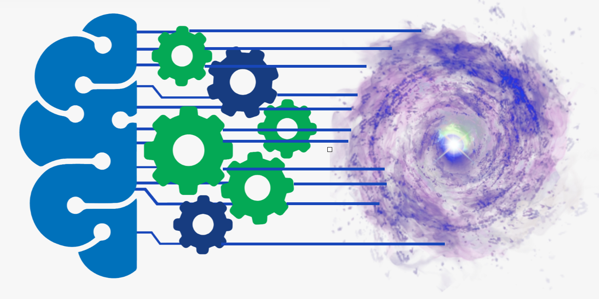
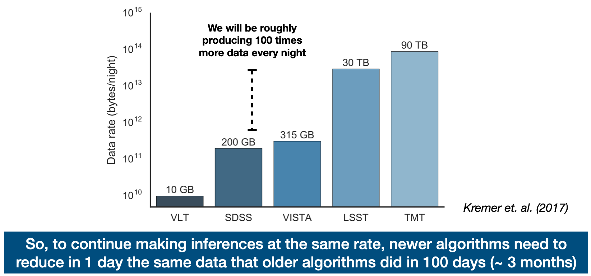
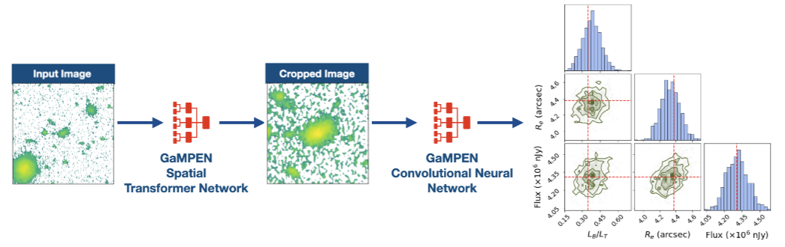
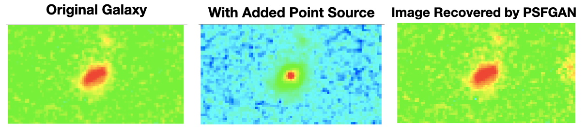

Custom-Made ML Tools for Astronomy
"When you have a hammer, everything looks like a nail"
The need for custom-made ML Tools in Astronomy

In the recent past, machine learning research has largely been driven by industrial/corporate applications/needs. It might be enticing to use these tools off-the-shelf as black-boxes. However, this is extremely dangerous! Unless we know (a) how accurate these methods are; (b) how uncertain they are; (c) what biases they have; specifically in the context of astronomy, we cannot draw robust scientific inferences using these tools.
Thus, developing machine learning algorithms specifically for astronomy is not an option -- but a necessity! Thus, as part of my Ph.D., one of my focuses has been developing new tools (outlined below), and robustly testing them out.
GaMorNet
 GaMorNet (Galaxy morphological Network) is a classification network that predicts
broad morphological classes for galaxies. GaMorNet doesn't need large amounts of real
data for training, and has been demonstrated to work on galaxies across a range of redshifts
using both ground and space-based imaging!
GaMorNet (Galaxy morphological Network) is a classification network that predicts
broad morphological classes for galaxies. GaMorNet doesn't need large amounts of real
data for training, and has been demonstrated to work on galaxies across a range of redshifts
using both ground and space-based imaging!
GaMPEN
 GaMPEN (Galaxy Morphology Posterior Estimation) network is the first machine learning framework that can automatically crop galaxies to an optimal size and predict posterior distributions for different morphological parameter.
Thus, while GaMorNet can determine broad classifications, GaMPEN predicts exact values of parameters as well as associated uncertainties. GaMPEN has been extensively tested and shown to yield accurate and well-calibrated posterior distributions with $\lesssim 5\%$ deviation from theoretical expectations.
PSFGAN
 The above two ML frameworks (GaMorNet and GaMPEN) can robustly assess the morphology of inactive galaxies -- however, the alone determine the morphology of galaxies with active black holes. Studying the morphology of Active Galactic Nuclei (AGN) hosts is more complicated due to the presence of a central point source, which is often quite bright compared to the host galaxy. Thus, this central point source needs to be removed before the galaxy can be analyzed by GaMorNet or GaMPEN.
To remove the point source, we have extensively tested preprocessing AGN host galaxies using PSFGAN, which is a Generative Adverserial Network (GAN). Given an AGN host galaxy as an input image, PSFGAN returns the image of the host galaxy (without the point source).
PSFGAN was originally developed by Stark et al.; but we have extensively adapted and extended PSFGAN. We have also verified that PSFGAN can be combined with the tools above to robustly determine the morphology of AGN host galaxies.